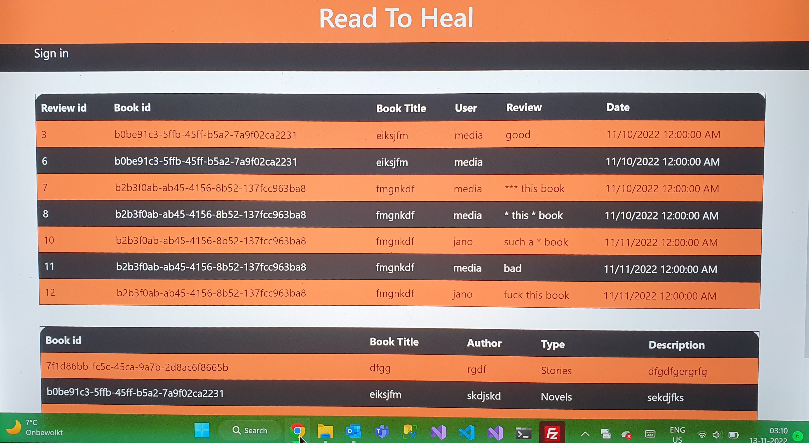

Portfolio

Project 1
c#

Project 2
c#
Web Developer & Designer
c#
c#

I am a passionate software student eager to explore the ever-evolving world of technology. I'm currently pursuing my studies in software engineering and dedicated to mastering the art of coding and problem-solving. My journey in the software world has been an exciting adventure. I'm constantly seeking new challenges and opportunities to expand my knowledge in programming languages, software development methodologies, and emerging technologies. From building web applications to diving into the world of mobile app development, I'm enthusiastic about every aspect of software development. I thrive on collaboration and enjoy working in teams to tackle complex problems and develop innovative solutions. I believe that the best way to learn and grow is by embracing every coding challenge that comes my way. Outside of coding, I love exploring new tech trends, attending hackathons, and keeping an eye on the latest developments in the software industry. My goal is to contribute to creating software that makes a positive impact on the world and helps shape the future. I'm excited to continue my journey in the world of software development and look forward to the endless possibilities that lie ahead. Feel free to personalize this profile with your own experiences, aspirations, and interests.
You can reach out to me at hannanict2022@gmail.com.